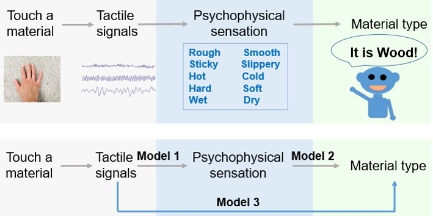
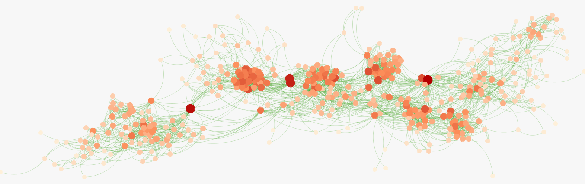

About Me
News
- I gave a talk on AI for haptics at the IEEE World Haptics Conference 2025 in Suwon, South Korea. [Slides]
- I presented a poster at the IEEE World Haptics Conference 2025 in Suwon, South Korea. [Poster]
- My paper Vulnerability of Information Transport on Temporal Networks to Link Removal was accepted by IEEE Transactions on Network Science and Engineering. [Paper]
- I joined the Haptic Interface Technology Lab as a Postdoc working on AI for Haptics.
- I successfully defended my PhD thesis at TU Delft and was awarded my doctoral degree. [Thesis]
Project
See a full list of papers on my google scholar. Below are some selected research projects.
When humans interact with a natural surface through exploratory motions, such as sliding, tapping, or pressing, a diverse range of tactile signals is generated at the skin. Through these signals, humans gauge multi-dimensional attributes of the surfaces, such as smoothness, coldness, and softness, which results in material recognition. However, how the information from these tactile signals rapidly transforms into meaningful perceptual attributes and subsequently into material recognition within the human cognitive process remains poorly understood. This limited scientific understanding hinders the realization of a digital world that fully incorporates the sense of touch. This project seeks to fill this research gap by identifying materials and perceptual attributes from tactile signals using Artificial Intelligence (AI) models. This proposal outlines a methodology that combines human intelligence and AI to uncover insights into human tactile perception. Our methodology will establish a solid foundation for advancing the scientific understanding of how humans perceive material surfaces through touch. Additionally, it will reveal differences not only in the final decisions but also in the decision-making processes between AI models guided by human insights and those developed without such guidance.

Temporal networks refer to networks like physical contact networks whose topology changes over time. Predicting future temporal networks is crucial, e.g., to forecast epidemics. Existing prediction methods are either relatively accurate but blackbox, or white-box but less accurate. The lack of interpretable and accurate prediction methods motivates us to explore what intrinsic properties/mechanisms facilitate the prediction of temporal networks. We use interpretable learning algorithms, Lasso Regression and Random Forest, to predict, based on the current activities (i.e., connected or not) of all links, the activity of each link at the next time step. From the coefficients learned from each algorithm, we construct the prediction backbone network that presents the influence of all links in determining each link’s future activity. Analysis of the backbone, its relation to the link activity time series and to the time aggregated network reflects which properties of temporal networks are captured by the learning algorithms. Via six real-world contact networks, we find that the next step activity of a particular link is mainly influenced by (a) its current activity and (b) links strongly correlated in the time series to that par.

Teaching
Teaching Assistant- Applied experimental methodsApr 2025 - Jul 2025
- Modeling and data analysis in complex networksFeb 2021 - Jul 2021
- Dynamic systems analysisFeb 2018 - Jul 2018